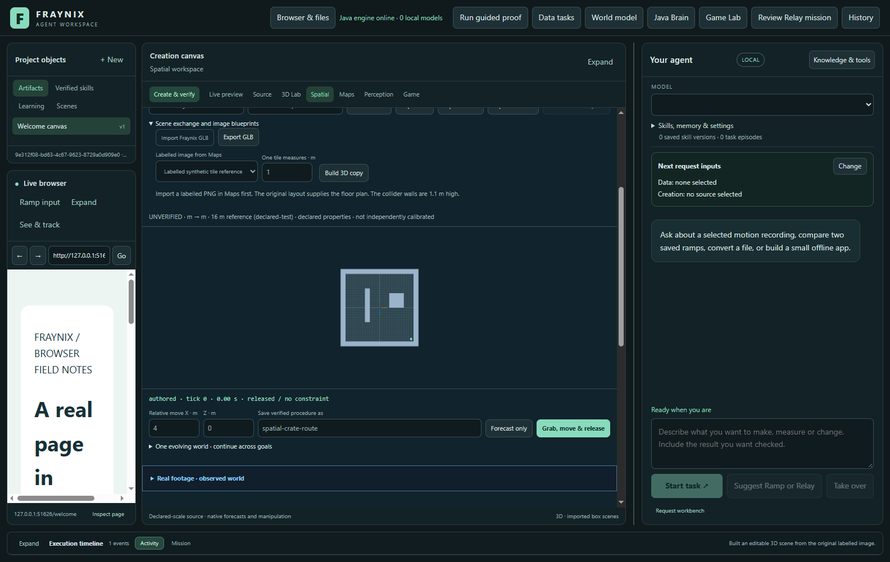
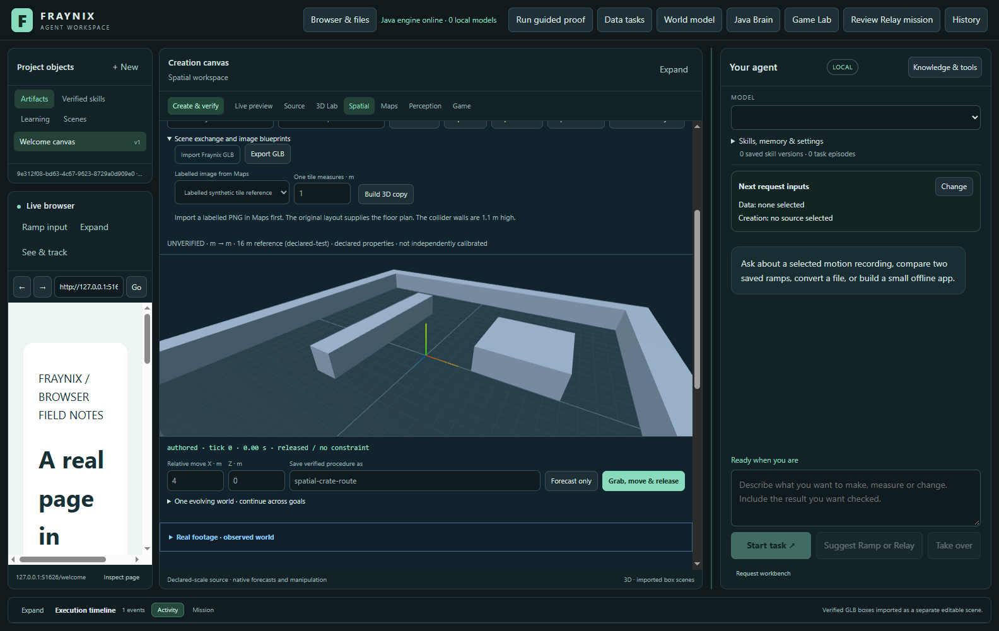
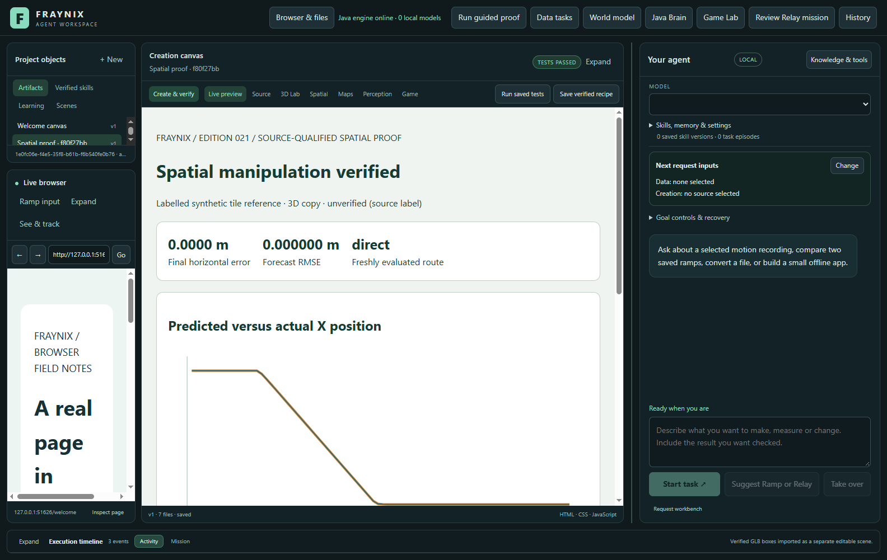

Take an editable scene from image to Blender and back
Convert a labelled plan into an editable 3D scene, exchange it with Blender via GLB, and move a returned object using the existing verified agent tool.

Top-down Spatial view of the original labelled tile layout

A Blender-edited copy reopens as individual editable objects

Fraynix completes and checks the native move on the returned object
System files
Open source